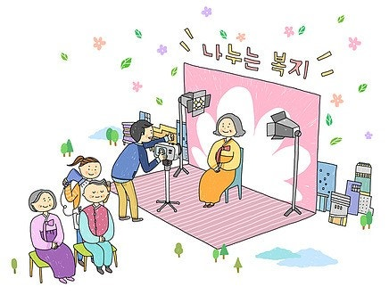

조은정
교수, 사회복지사
010-1234-5678
hello@email.com
www.mywebsite.com
경력 사항 | WORK EXPERIENCE
일본, 아동가정종합연구소(촉탁연구원)
2000-2004
아동 및 가족 관련 연구
동서대학교(교수)
2004-현재
사회복지학 - 아동가족복지, 실천 연구
담당교과목 | SUBJECTS

사회복지상담론
아동복지론
사회복지실천기술론
가족상담및가족치료
학력 | EDUCATION
| 학교명 | 전공 | 졸업년도 |
|---|---|---|
| 숭실대학교 대학원 | 사회사업학과 | 1997 |
| 일본사회사업대학 대학원 | 사회복지연구과 | 2007 |
자격증 | LICENSE
| 자격증명 | 발급기관 | 취득년도 |
|---|---|---|
| 사회복지사1급 | 보건복지부 | 1995 |
| 운전면허1종 | 경찰청 | 1997 |